Давно мечатл стать успешным инстаграммером?
Курс от проффесиональной инстаграммерши Елены Мамонтовой поможет тебе осуществить мечту!
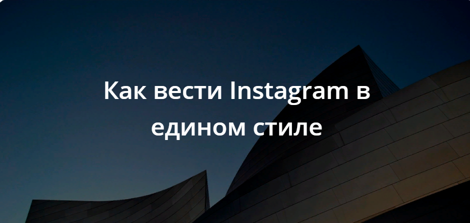
Чтобы придерживаться единого оформления аккаунта для начала необходимо определить стиль раскладки, то есть в каком порядке вы будете публиковать фотографии.
Шахматный порядок в Инстаграм
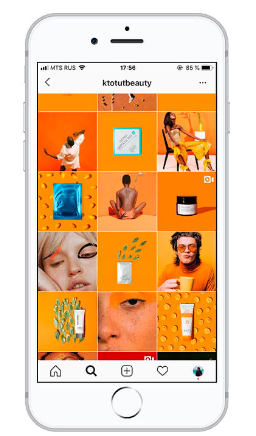
Чередование через одну фотографий близких по смыслу или цветовой гамме. Например: фото — цитата-фото; цветное фото — черно-белое — цветное.
Фото в ряд
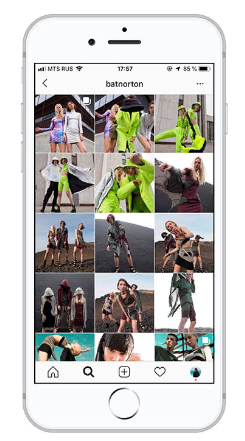
Для каждой линии (вертикальной или горизонтальной) выделяется единая концепция фото. Например: горизонтальный ряд из трех фото посвящен демонстрации одного платья в разных ракурсах или одной теме по путешествию в какой-либо стране.
Фото в рамке
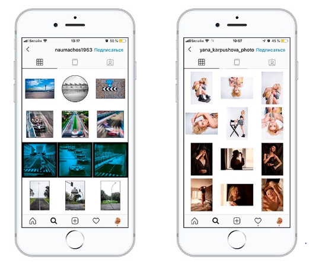
Фотографии, которые заключены в «рамки», выделяются на фоне остальных страниц в Инстаграм, т. к. выглядят нестандартно. Рамки могут быть разного размера и формы (сочетание круглых, квадратных).
Коллаж из фотографий в Инстаграм
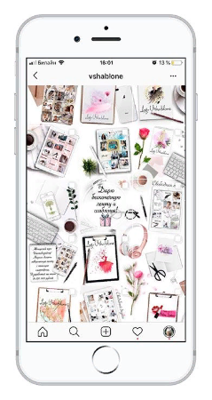
Такой стиль оформления сложен в реализации. Чтобы лента вызвала магнетизм, фотографии должны смотреться как единое целое. Они выполнены в едином стиле, они плавно перетекают друг в друга, создавая впечатление общего полотна. Этот вариант часто используют фотографы или веб-дизайнеры, т.к. создание сложных коллажей выполняется в Photoshop или Lightroom.
Мозаика
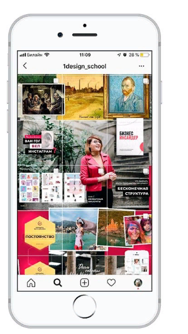
Такой вариант оформления еще называют «Пазл». Для реализации нужно создать качественную фотографию или иллюстрацию и разрезать ее от 3 до 12 частей. По такому принципу создаются и лендинги. Такой вариант больше подходит коммерческим аккаунтам, кто предлагает свои услуги. Такие аккаунты чаще всего сталкиваются с проблемами визуализации своих услуг и, соответственно, генерацией контента. Например: фотографы, smm-менеджеры, бизнес-коучи.
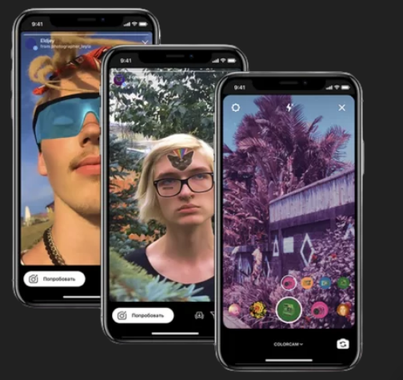
Маски для Instagram/Facebook, как правило, служат просто для развлечения пользователей, но нередко используются и в маркетинговых целях. Особенно важно это может быть в моменты первоначального выхода на рынок или представления новых версий продукта/услуги. И однозначно заслуживает внимания, когда успешность проекта зависит от активности обычных пользователей.
Поэтому при наличии свободных ресурсов и, что ещё более важно, идей — создание маски для проекта заказчика кажется мне хорошей возможностью продемонстрировать заказчику степень вовлечённости и заинтересованности команды в успехе всего проекта.
Spark AR Studio (IDE)
Для создания масок/эффектов (далее я буду использовать термин «эффект») Facebook предоставляет специализированную IDE Spark AR Studio.
1. Управление превью
Выбор персоны/лица для превью. Здесь же при наличии подключённой веб-камеры появляется опция для неё — студия не поддерживает «горячее» подключение для USB-устройств, поэтому если камера не была подключена изначально, нужно перезапустить студию.
Пуск/Пауза — очень важная кнопка. Все манипуляции с размещением объектов в пространстве нужно производить в режиме Паузы.
Перезапуск — тоже полезная кнопка, если эффект содержит много интерактивных элементов и меняет своё состояние в зависимости от действий пользователя.
2. Перемещение объектов в пространстве
Перемещение объекта или группы объектов по осям X/Y/Z.
Вращение объекта вокруг осей X/Y/Z.
Изменение размера объекта по осям X/Y/Z.
3. Дополнительные элементы управления превью
Переключение между фронтальной и задней камерой.
Вертикальная/горизонтальная ориентация видео.
4. Тестирование и дистрибуция
Запуск эффекта на подключённом устройстве (требуется установка приложения-клиента).
Подготовка и загрузка дистрибутива эффекта в Spark AR Hub.
Начинать новый проект рекомендую с одного из предлагаемых студией шаблонов:
• Eye Color — изменение цвета глаз.
• 3D Animated Poster — эффект с элементом дополненной реальности, для «оживления» постеров.
• Face Decoration — пример с добавлением очков (3D-объект).
• Background — замена фона.
• Makeup — макияж.
• World Object — добавление к изображению с камеры 3D-объекта, не привязанного к персоне.
• Neck Decoration — пример с добавлением галстука-бабочки.
• Color Filter — наложение цветовых фильтров на изображение с камеры.
• Head Decoration — пример с добавлением кепки-козырька.
• Face Mask — пример с «нарисованной» на лице маской (ака аквагрим).
Перечисленные шаблоны демонстрируют различные возможности и примеры их использования по отдельности, но в каждом проекте/эффекте возможно использование комбинации — например, замена фона и «декорирование» головы различными объектами. Поэтому отдельный шаблон можно использовать как базу для создания своего собственного эффекта либо начать вообще с нуля.
Рассмотрим шаблонную структуру сцены на примере классической лицевой маски:
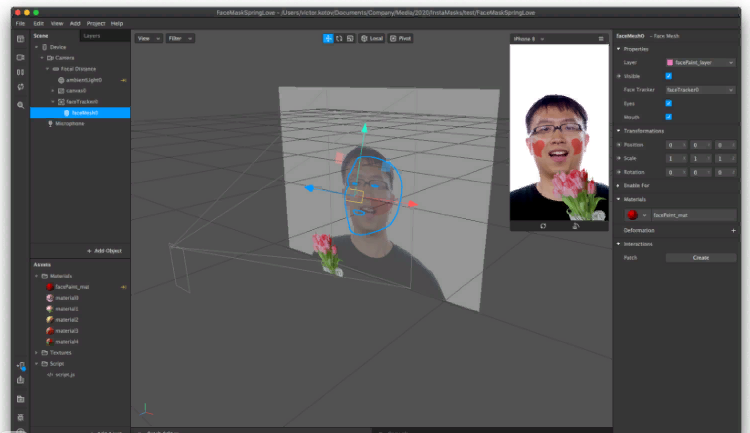
С уровня “faceTracker” располагаются объекты, привязанные к изображению человека (или людей), попадающих в кадр. Максимум можно отслеживать пять лиц (задаётся в настройках проекта).
Объекты дополненной реальности можно привязывать к следующим точкам на голове/лице:
• Левая/правая щека (Left/Right Cheek).
• Подбородок (Chin).
• Левый/правый глаз (Left/Right Eyeball).
• Веко левого/правого глаза (Left/Right Eyelid).
• Левая/правая бровь (Left/Right Eyebrow).
• Лоб (Forehead).
• Нос (Nose).
У некоторых точек есть возможность задать более детальную привязку — например, ноздря носа.
Также возможно увязать логику отображения объектов с мимикой лица:
• Моргание (Blink).
• Поднятие бровей (Eyebrows Raised).
• Опускание бровей (Eyebrows Lowered).
• Счастливое лицо (Happy Face).
• Кивок (Head Nod).
• Поворот головы (Head Rotation).
• Качание головой (Head Shake).
• Поцелуй (Kissing Face — с этим жестом нужен особый навык и выразительность).
• Закрытие левого/правого глаза (Left/Right Eye Closed).
• Открытие рта (Mouth Open, можно задать условную величину — насколько широко должен быть открыт рот).
• Улыбка (Smile).
• Удивлённое лицо (Surprised Face).
В первую очередь разработка эффектов предполагает использование технологии «патчей». Для этого в студии есть специальная область, которую можно скрывать:
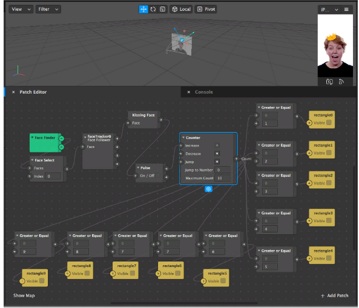
Однако практически все задачи могут быть решены в коде. Язык программирования — наверное, не будет большим сюрпризом — JavaScript. Встроенного редактора нет, используется любой внешний (VS Code, Webstorm и прочие). Есть модуль поддержки локализации, возможность добавлять в интерфейс нативные элементы управления (picker и slider).
Особенности программирования:
• Нельзя создавать новые объекты, оперируем только теми, которые были созданы на этапе разработки.
• Reactive.
• Простейшие ошибки можно отладить во время разработки (в студии есть консоль).
Напоследок перечислю форматы файлов, которые могут быть использованы в проектах.
Поддерживаемые форматы для 2D assets:
• PNG
• JPEG
• SVG
Поддерживаемые форматы для 3D-моделей:
• FBX 2014/2015 (binary and ASCII versions)
• gITF 2 (binary and text versions)
• COLLADA / DAE
• OBJ
• DAE
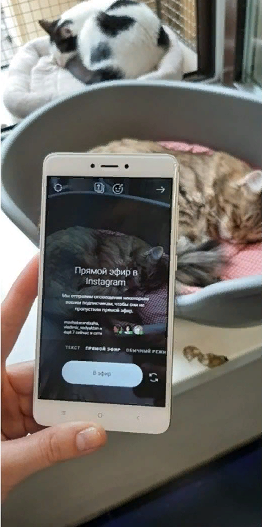
Что такое прямой эфир Инстаграм?
Прямой эфир в любой соцсети — формат видео, который транслируется зрителям в реальном времени, здесь и сейчас. Возможность вести прямые трансляции в Инстаграм появилась в 2017 году. Каждые несколько месяцев у этого формата появляются новые фишки — возможность накладывать маски, вести совместные эфиры с другими пользователями, получать вопросы от зрителей прямо во время эфира и другие. Соцсеть все еще активно развивает этот формат и поощряет пользователей, которые выходят в прямой эфир в Инстаграме:
• Как только вы выходите в прямой эфир, все ваши подписчики (те, кто в приложении и у кого включена функция) получают уведомление:
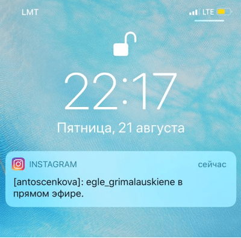
• Прямые эфиры попадают в самое начало ленты cторис. Обложка при этом дополняется биркой «прямой эфир».
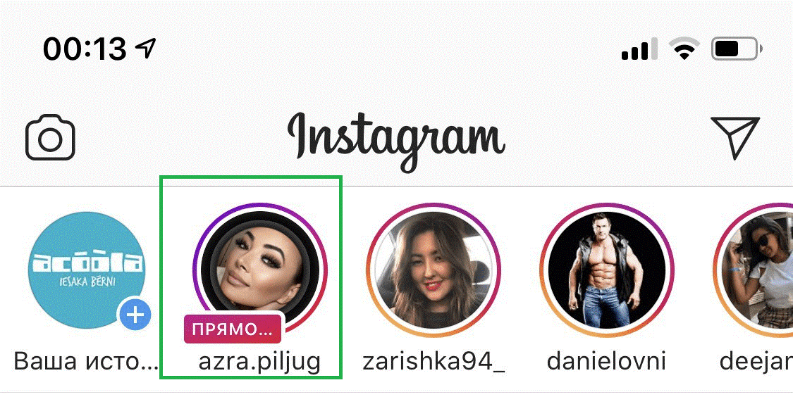
Как подготовиться к прямому эфиру в Инстаграм
1. Выберите тип эфира
Есть несколько типов трансляций, и каждый помогает решить конкретные задачи:
• Рассуждение на тему. Вы задаете тему и делитесь своими мыслями, рассказываете об опыте. Блогеры устраивают такие эфиры, чтобы стать ближе к подписчикам, высказать свою точку зрения.
• Лекция или вебинар. Инстаграм позволяет проводить эфиры до часа. Этого достаточно, чтобы провести бесплатный вебинар или мастер-класс, в конце
• Обзор, презентация. Можно показать распаковку продукта, сам продукт со всех сторон или продемонстрировать, как вы предоставляете услугу.
• Ответы на вопросы. Предложите подписчикам задать вопросы в форме для вопросов в сторис или в комментариях под постом. Также можно задать определенную тему и пригласить подписчиков задавать вопросы прямо во время эфира.
• Онлайн-отчет с места событий. Отличная идея, если у вас открытие магазина, юбилей компании или запуск нового продукта.
• Закулисье или бекстейдж. Покажите подписчикам, что происходит за кадром. Например, вы устраиваете мероприятие — покажите подготовку. Или у вас крутой фотосет — покажите, как он выглядит со стороны.
• Объявление победителей конкурса. Если вы устраивали конкурс — разыграйте приз во время эфира. Это повысит уровень доверия подписчиков, ведь во время эфира подтасовать результаты почти невозможно.
• Совместный прямой эфир в Инстаграме с другим пользователем. Найдите человека, который ведет Инстаграм со схожей или смежной тематикой, и возьмите у него интервью, устройте баттл или просто непринужденно поболтайте. Не стесняйтесь приглашать известных личностей, особенно если у вас хороший блог.
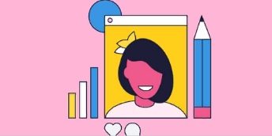
Красиво оформленный текст легче читается, привлекает внимание, раскрывает суть фото, вызывает интерес. Текст может побудить подписчиков подписаться на аккаунт, сделать покупку, рассказать о вас и вашем бизнесе знакомым или, как минимум, проявлять активность в профиле
Делите текст на абзацы
Не пишите полотно текста, разделите его на абзацы, так намного легче воспринимать информацию.
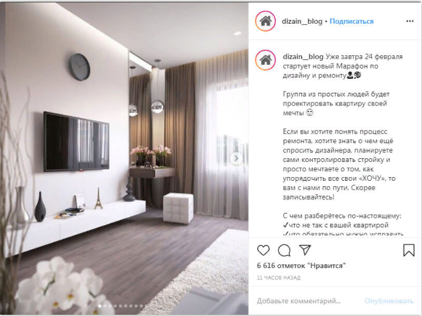
Затрагивайте 1 тему под 1 фото
Не пытайтесь запихнуть в один пост все преимущества вашего товара, возьмите какую-то узкую тему и посвятите ей конкретный пост. Например, вы провели мероприятие, выпустили новинку, готовитесь к конкурсу – для каждой темы пишите свой текст.
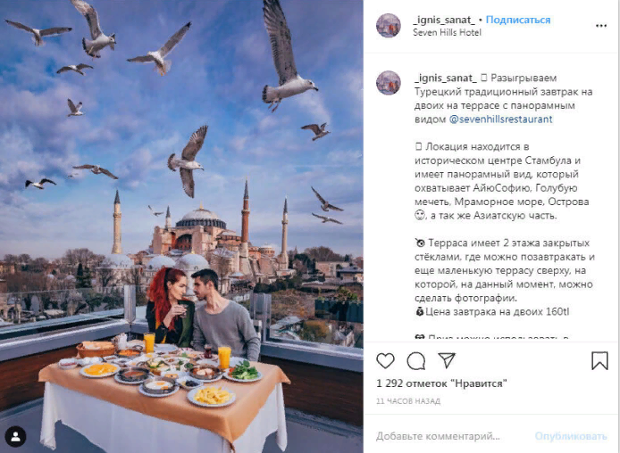
Используйте эмодзи
Эмодзи помогают упорядочить текст и вызвать определенные эмоции у читателей. Да и просто делают текст ярким. Но используйте смайлы аккуратно и по делу – эмодзи, натыканные в разных частях текста без логики и смысла, наоборот раздражают. Как и слишком большое их
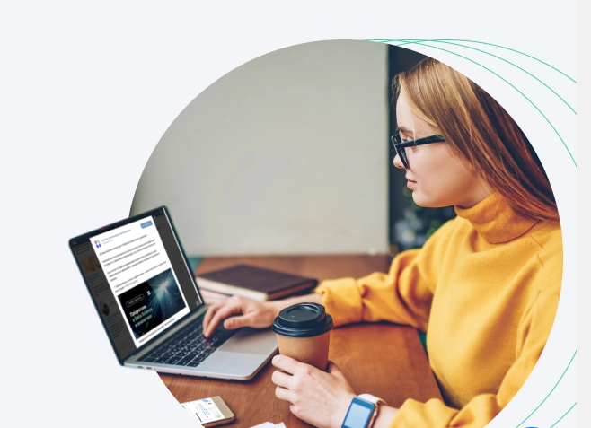
Таргетинг в Инстаграме это официальный способ продвижения своей рекламной продукции в новостной ленте, который довольно легко и просто настроить. Пример таргетированной рекламы в Instagram представлен ниже:
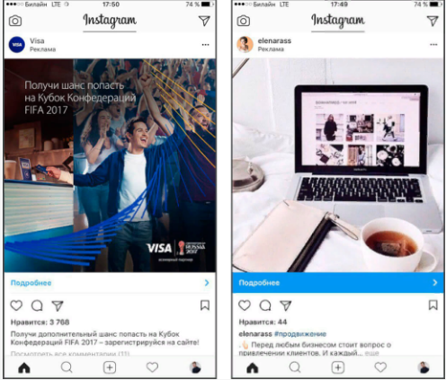
НАСТРОЙКА ТАРГЕТИРОВАННОЙ РЕКЛАМЫ
Шаг 1 Создание аккаунта
Вы сейчас будете удивлены, но настраивается реклама в инстаграме как и в facebook, в кабинете. И вся разница в настройке кроется буквально в 2-3 пунктах.
Поэтому, если Вы поймёте, как настраивать инстаграм рекламу, то фейсбук, можно сказать, Вы тоже уже умеете настраивать.
Шаг 2 Связать аккаунты
Следующим шагом нам нужно связать наш аккаунт фейсбука и инстаграма Это делается в бизнес-менеджере – business.facebook.com.
Для это мы переходим по ссылке, нажимаем “Создать аккаунт” и проходим небольшую регистрацию из пару шагов. Затем в правом верхнем углу нажимаем “Настройка компании””.
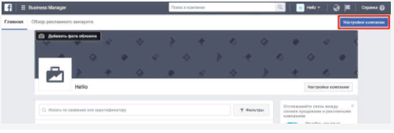
Шаг 3 Выбор целей
Мы подошли к самому процессу, начинается сама настройка таргетированной рекламы в инстаграм.
Попав в Ads manager, мы нажимаем “Создать объявление” и видим список, обозначающий цели, под которые будет оптимизировать facebook (он же instagram) Вашу рекламную кампанию.
Это значит, что социальная сеть с помощью своих собственных алгоритмов будет сама себя чтобы достичь цели, которую мы выберем на этом этапе.
Есть три основных стратегии, которые включают в себя конкретные тактики и подбираются исходя из задач.
Шаг 4. Настройка компании
Когда выберете цель и назовете кампанию, у Вас откроется окно с детальными настройками компании.
На первый взгляд окно покажется приборной панелью частного самолёта. Однако, при детальном рассмотрении, всё окажется намного проще, чем Вы думаете.
Шаг 5. Формат
При использовании инстаграма, наверняка Вы видели разные виды рекламы. Где-то это было видео, где-то слайдшоу, а где-то просто изображение. Так вот, на этом этапе мы должны определиться, что будем показывать.
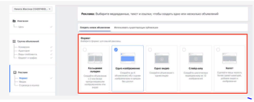
После выбранного формата внизу Вы увидите дополнительное меню по настройке и подсказки по техническим характеристикам, которые обязательно нужно учесть, иначе Вашу рекламу не пропустят и Вы потеряете время.
После всех настроек и проверки, что Ваше объявление выглядит именно так, как Вам нравится, нажимайте “Разместить заказ”.
На самом деле настройка таргетинга, с учётом подготовки изображений, занимает не более 30 минут. А то и за 5-10 минут можно справиться, если всё уже готово. И далее, когда Вы уже без шпаргалок будете знать, как сделать все, будете делать это очень быстро.